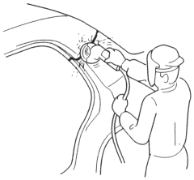

- Finishing the welded areas.
- Level the MIG welded areas with a disc sander.
|
To prevent eye injury, wear goggles or safety glasses whenever sanding, cutting or grinding. |
 WARNING
WARNINGNOTE: Take care not to grind excessively.
- Even out high areas with a hammer. Be careful not to deform them.
- Smooth out welded door and tailgate areas, and window opening flanges with a hammer and dolly.
- Fill the deformed area and smooth out the welded areas with body filler.

- Applying the sealer. Seal the overlapped areas of the outer panel, and the welded surfaces of the new parts. Seal gaps completely.
- Apply the paint.
|
|
- Apply undercoat to the wheelhouse and under-floor.
- Apply the anti-rust agent to the inside of the outer panel and welded areas.